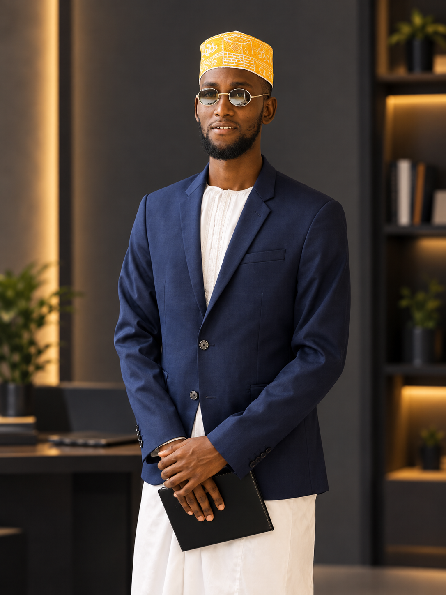

Ingénieur logiciel full-stack basé à Dakar, je développe des applications métier, des APIs, de l'automatisation et de l'infrastructure cloud — pour des projets académiques, des startups et des missions à venir à l'international.
Les technologies sont des outils. Voici les problèmes qu'elles me permettent de résoudre.
Chaque projet est étiqueté selon son niveau réel de maturité — académique, prototype, preuve de concept ou produit potentiel.
Les outils avec lesquels je construis — preuve technique derrière chaque solution, pas une liste à cocher.

Je m'appelle Mohamed Anzize. Je ne cherche pas uniquement à écrire du code : je cherche à comprendre comment un problème réel devient un système logiciel exploitable — depuis l'architecture jusqu'au déploiement.
Je navigue entre Java/Spring Boot, .NET, Laravel, FastAPI, React, Angular et Expo/React Native — pas par dispersion, mais parce que chaque problème impose sa propre stack. Au-delà du développement applicatif, je maîtrise aussi l'administration système Linux, le réseau et le cloud — une polyvalence de bout en bout, du poste de travail jusqu'à la production.
AMSD est aujourd'hui une marque personnelle portée par un ingénieur logiciel en formation. Mon objectif est de la faire grandir progressivement, projet après projet, vers une pratique de solutions logicielles à part entière.
Ouvert aux missions freelance, aux opportunités remote et aux collaborations techniques.